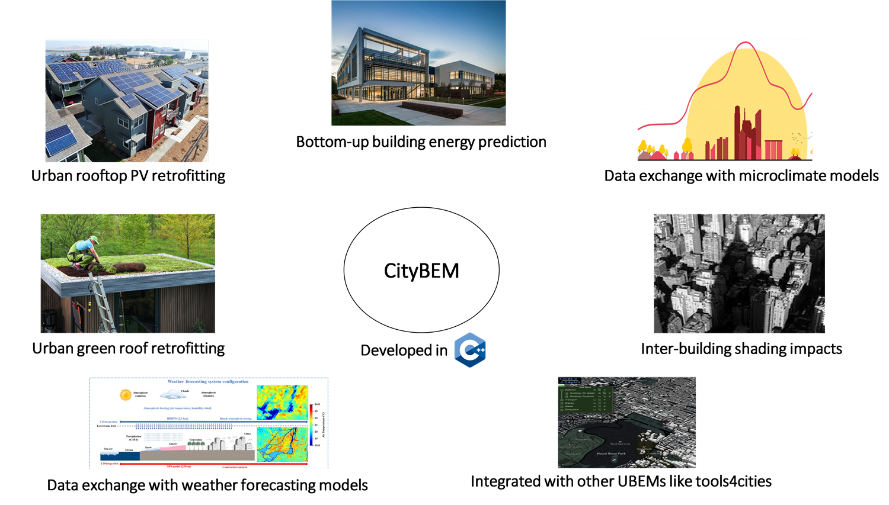
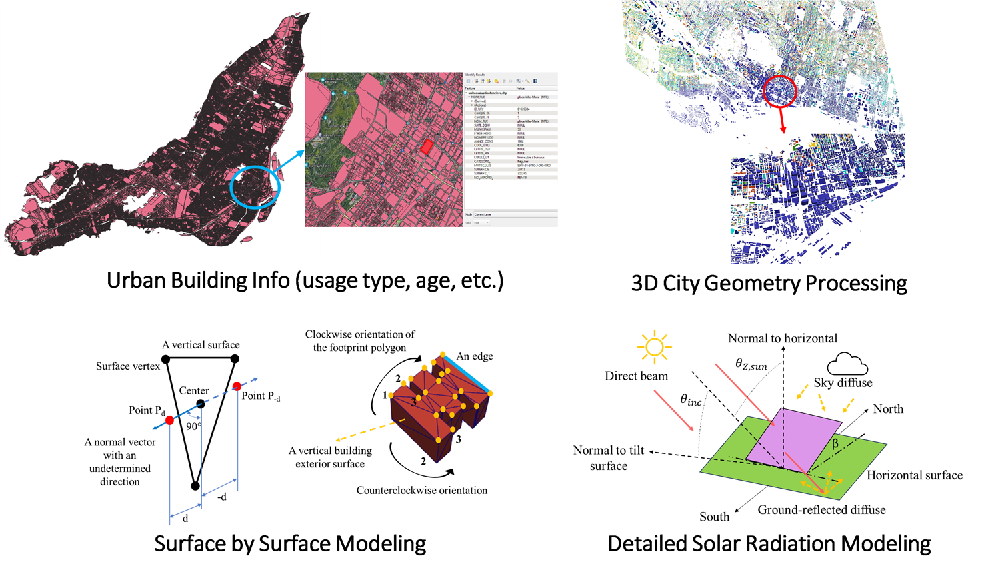

🏙️ CityBEM V2 Documentation
Welcome to the official documentation of CityBEM V2 — an advanced, lightweight, and scalable Urban Building Energy Modeling (UBEM) framework designed for high-resolution, city-scale simulations with outstanding computational efficiency.
CityBEM Overview


🚀 What is CityBEM V2?
CityBEM V2 integrates cutting-edge modules for:
- Transient building heat-balance and energy modeling
- 3D city-scale solar radiation and shading
- ⚡ Rooftop PV design and power generation from solar energy
- 🌬️ Microclimate co-simulation
- 🧱 3D geometry handling (e.g., STL ASCII)
- 🧩 C++ & Python hybrid workflows
CityBEM V2 is engineered and custom-designed for:
- ⏱️ High temporal resolution (hourly/minute-scale)
- 🏢 100,000+ buildings
- ⚙️ Low computational cost
- 🔗 Seamless integration with other city-scale tools (CFD-based microclimate models, radiation models, digital twins, electricity grid simulators)
🚀 Key Capabilities
-
High Computational Efficiency
Optimized for large-scale UBEM simulations. -
City-Scale Solar Modeling
3D ray-tracing shading for dense urban geometry. -
Rooftop PV Simulation
Panel layout design, shading-aware irradiance, and net-metering. -
Microclimate Co-Simulation
Seamless coupling with CityFFD fields. -
Scalable Data Structures
Supports tens of thousands of buildings.
📘 Explore the Documentation
-
Installation
Get started by installing CityBEM V2 and required dependencies. -
Input Data Arrays
Learn how to prepare building, weather, and radiation inputs. -
Solar Radiation Modeling
Understand the 3D shading engine, ray-tracing method, and irradiance workflow. -
Rooftop PV Simulation
Design scalable PV networks, compute shading-aware power outputs. -
Microclimate Co-Simulation
Integrate CityFFD microclimate fields directly into the energy model. -
Outputs
Explore how to interpret simulation results and export workflows. -
Test Cases
Run example cases, including the Montreal Rooftop PV Case. -
Publications
Cite CityBEM V2 in your research and explore related studies.
🔍 How to Navigate
Use the left sidebar to jump between modules, examples, and detailed documentation.
Each page includes diagrams, workflows, and code snippets to help you replicate large-scale UBEM and PV simulations.
📝 Citation
If you use CityBEM in your research, please cite the papers listed in the Publications section.
🤝 Need Help?
Visit the Contact page for supervision and collaboration details. Visit the Contact page for supervision and collaboration details.